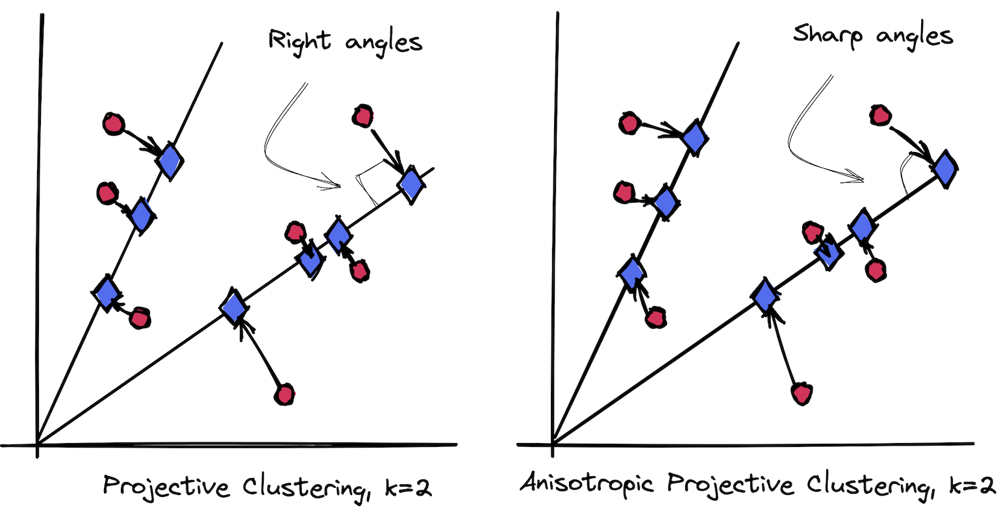
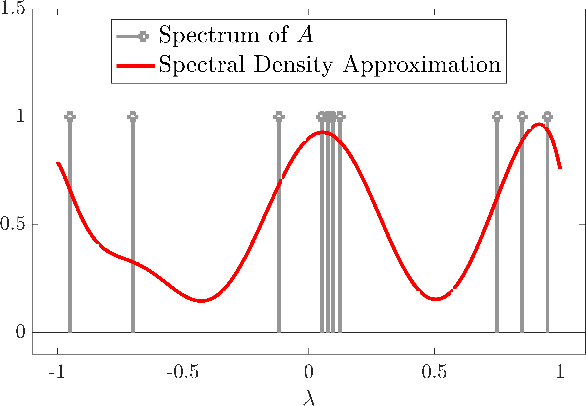
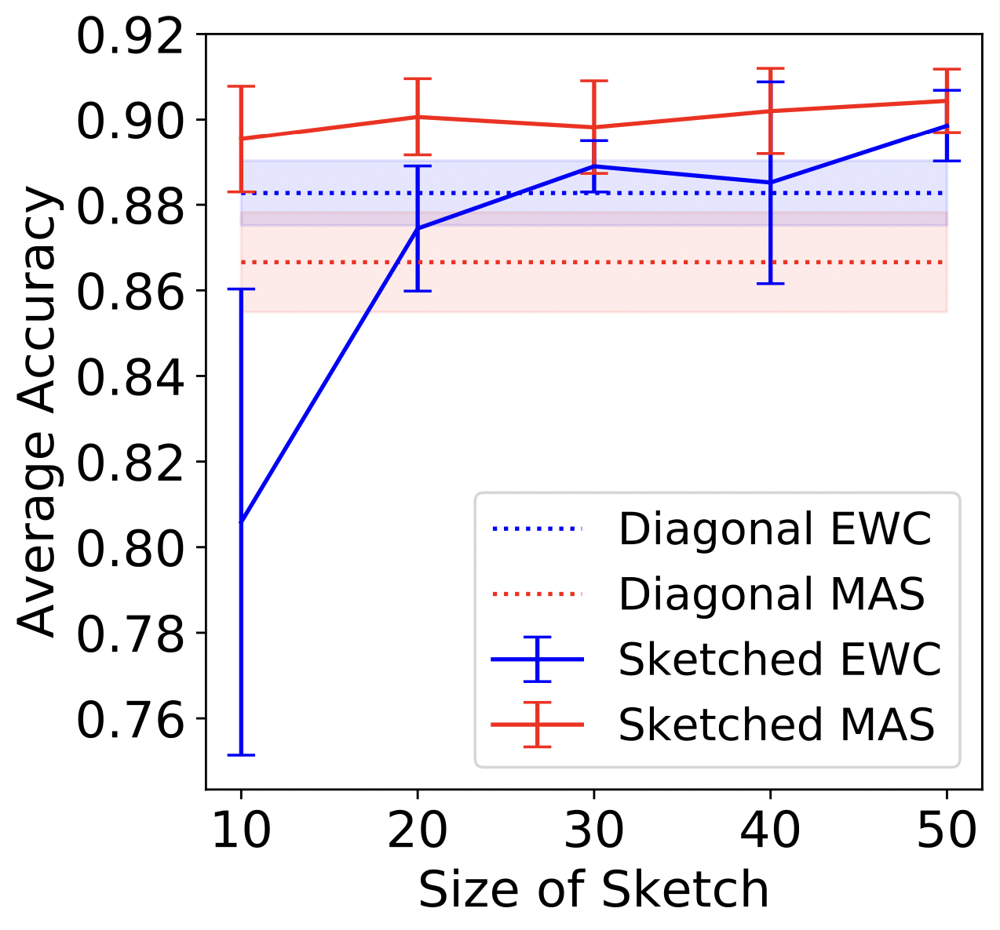

|
I am a fourth year Ph.D. student in Computer Science at Johns Hopkins University, advised by Vladimir Braverman. Previously I earned a B.S. (2013-2017) and M.S. (2017-2018) in Computer Science from Carnegie Mellon University where I was fortunate to work with Anupam Gupta, Kirk Pruhs, David P. Woodruff and Anil Ada. Email / CV / Google Scholar / LinkedIn |
{kind=link}
|
Broadly, I am interested in designing efficient algorithms with provable guarantees for problems in data science and machine learning. More specifically, I have worked on sketching and coreset methods for problems in randomized numerical linear algebra, optimization and machine learning. |
|  |
Aditya Krishnan, Edo Liberty In Submission, 2021 Our method uses projective clustering which produces more quantization centers resulting in more accurate results for max dot-product search. |
|  |
Vladimir Braverman, Aditya Krishnan, Christopher Musco In Submission, 2021 We present a method to estimate the spectral density of any Hermitian matrix using approximate matrix-vector multiplications. |
|  |
Haoran Li, Aditya Krishnan, Jingfeng Wu, Soheil Kolouri, Praveen K. Pilly, Vladimir Braverman Asian Conference in Machine Learning (ACML), 2021 We show sketching methods improve structural regularization algorithms for lifelong learning. |
|
Vladimir Braverman, Robert Krauthgamer, Aditya Krishnan, Shay Sapir Conference on Learning Theory (COLT), PMLR, 2021 We show a sampling method that sparsifies numerically sparse matrices and give error guarantees in the spectral norm. |